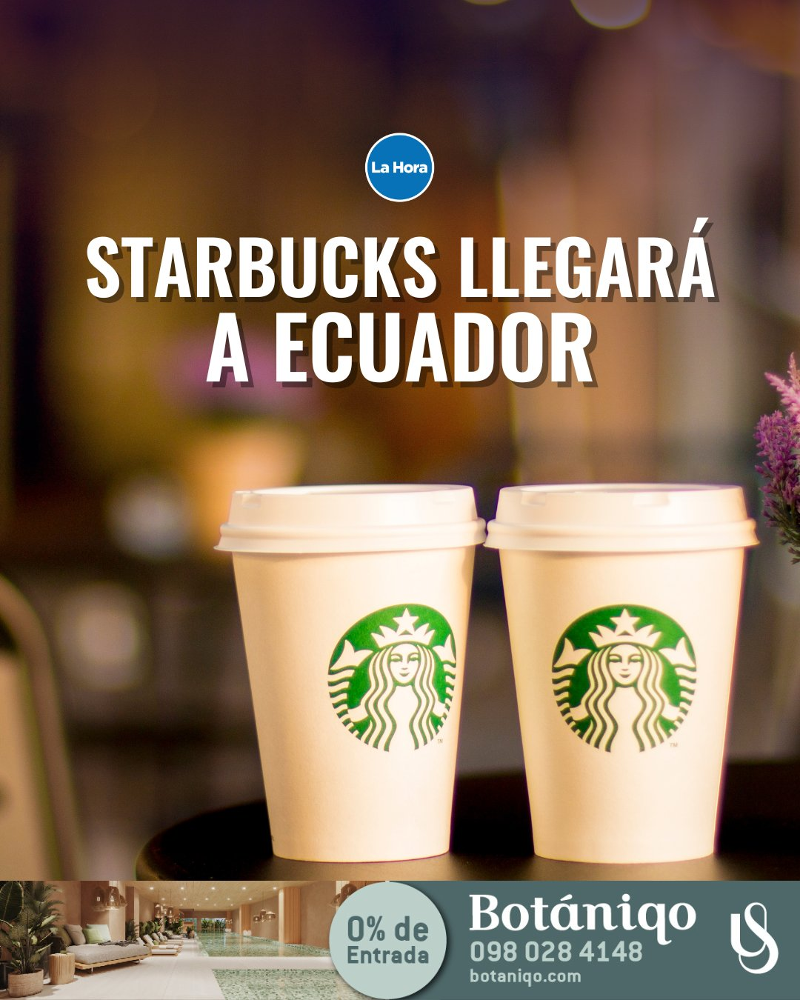

¿CUÁNDO SE FUNDÓ STARBUCKS®?
Cuando el primer Starbucks® abrió sus puertas en 1971, nuestra compañía era una sola tienda en el histórico Pike Place Market de Seattle. Desde un estrecho escaparate, Starbucks® ofreció algunos de los mejores cafés integrales recién tostados del mundo. El nombre, inspirado en Moby Dick, evocaba el romance de alta mar y la tradición marinera de los primeros comerciantes de café.
En 1981, Howard Schultz (expresidente de la Junta Directiva, presidente de la empresa y director ejecutivo de Starbucks®) entró por primera vez en una tienda Starbucks® . Desde su primera taza de Sumatra, Howard fue atraído a Starbucks ®y se unió un año más tarde.
En 1983, Howard viajó a Italia y quedó cautivado con las cafeterías italianas y el romance de la experiencia del café. Tenía la visión de devolver la tradición italiana de la cafetería a Estados Unidos. Quería crear un lugar para la conversación y un sentido de comunidad, un tercer lugar entre el trabajo y el hogar. Dejó la compañía por un corto periodo de tiempo para abrir sus propias cafeterías Il Giornale y regresó en agosto de 1987 para comprar Starbucks® con la ayuda de inversionistas locales.

Starbucks Anuncia su entrada a Ecuador y Honduras
Seattle, Washington - Starbucks Coffee Company, anunció hoy planes para ingresar a dos nuevos mercados en la región de Latinoamérica y el Caribe para finales de este año: Ecuador y Honduras. Esta expansión es parte de la estrategia de Starbucks “Triple Shot Reinvention with Two Pumps” en noviembre pasado, que establece la hoja de ruta sobre cómo la compañía proporcionará crecimiento sostenible a largo plazo. La estrategia incluye acelerar la expansión a 55,000 tiendas globalmente para 2030.
En asociación con Delonorte S.A. y Premium Restaurants of America, la compañía abrirá tiendas en Quito, Ecuador y San Pedro Sula, Honduras, respectivamente. Las aperturas en estos mercados llevarán las operaciones de Starbucks a 26 mercados en la región de Latinoamérica y el Caribe y a 88 a nivel global. La presencia de la compañía en Latinoamérica y el Caribe ha crecido de forma constante, con más de 1,600 tiendas, proporcionando oportunidades de empleo a más de 22,000 partners (empleados) de mandil verde.
"Latinoamérica ha sido parte integral del negocio de Starbucks desde nuestra fundación en 1971", dijo Brady Brewer, ceo de Starbucks International. "Más de la mitad del café que Starbucks compra en todo el mundo cada año proviene de la región, y estamos orgullosos de continuar llevando la Experiencia Starbucks a más personas, en más lugares, en celebración de la rica herencia cafetera de la región."
La apertura de la primera tienda de Starbucks en Ecuador está prevista para julio de 2024, mientras que el debut en Honduras se espera más tarde este año.

Socios locales para una expansión regional
Starbucks ha establecido sólidas relaciones con operadores licenciatarios, responsables de la gestión de las nuevas tiendas de la marca en Ecuador y Honduras. Estos operadores, Delonorte S.A. en Ecuador y Premium Restaurants of America en Honduras, han sido elegidos por su amplio conocimiento del mercado local y su capacidad demostrada para brindar la excepcional Experiencia Starbucks a los clientes.
Delosi S.A., la empresa matriz de Delonorte S.A. y operador comercial de Starbucks en la región andina desde hace largo tiempo, ha sido un socio clave desde que Starbucks abrió su primera tienda en Perú en 2003. Desde entonces, esta asociación ha crecido hasta llegar a 117 tiendas en Perú y 7 en Bolivia, lo que demuestra un fuerte compromiso con la expansión regional.
Del mismo modo, Premium Restaurants of America comenzó su asociación con Starbucks en 2010 con la apertura de la primera tienda de la empresa en El Salvador y desde entonces se ha expandido en Guatemala y Costa Rica. Actualmente, la empresa opera 26 tiendas en Costa Rica, 23 en El Salvador y 20 en Guatemala.
Historia del abastecimiento de café y apoyo a la comunidad en Ecuador y Honduras
Starbucks lleva más de una década comprando café arábica de alta calidad procedente de Ecuador y Honduras, y continuará elevando los cafés de estos mercados a la escena mundial.
Starbucks® Galápagos La Tortuga Starbucks Reserve® y Ecuador Loja Starbucks Reserve® de Ecuador; así como Starbucks® Single-Origin Honduras Marcala y Honduras Honey-Processed Los Naranjos de Honduras, muestran la excelencia regional dentro de la diversa cartera global de café de Starbucks.
A través del programa Prácticas Coffee and Farmer Equity (C.AF.E.) y proyectos para elevar las comunidades cafetaleras, Starbucks mantiene su compromiso de apoyar a los agricultores en Ecuador y Honduras, fomentando la transparencia económica y practicando la responsabilidad social en todo momento.